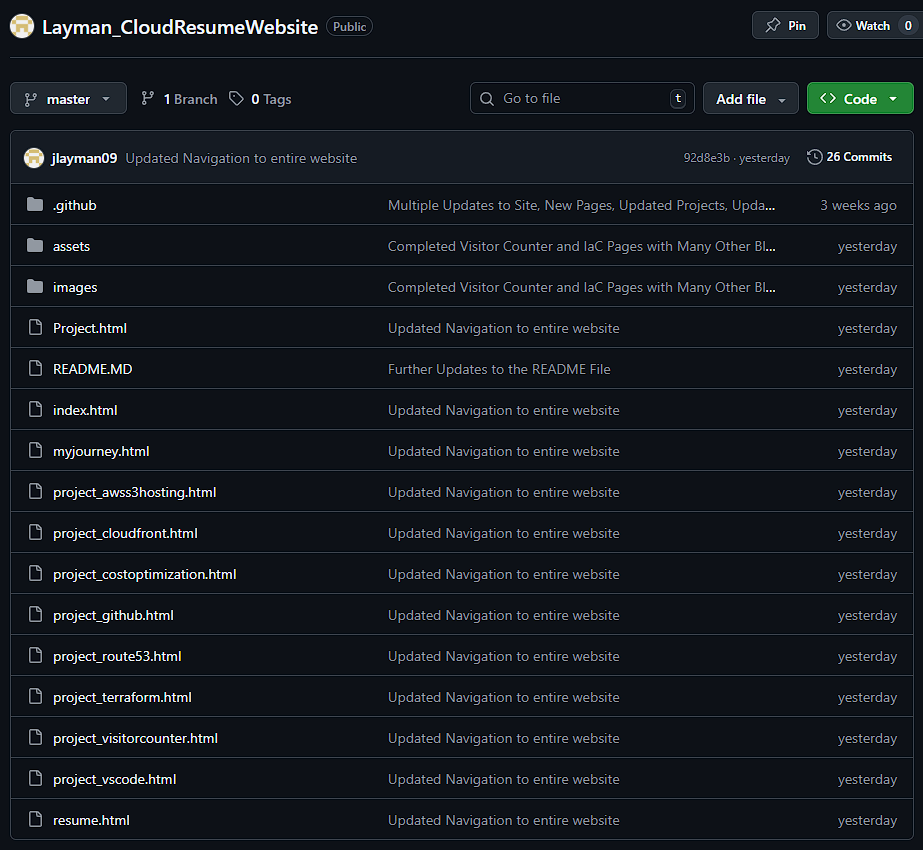
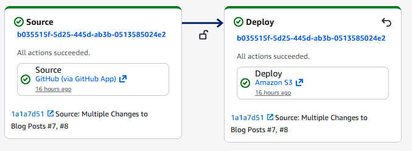
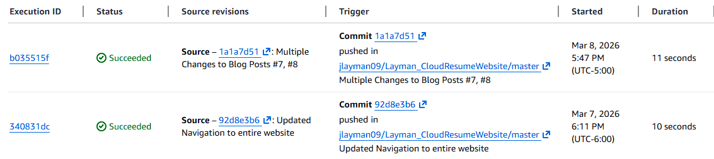

Automating Deployments with GitHub CI/CD
Part 5 of the AWS Cloud Resume Challenge
After deploying my website to Amazon S3 and securing it with CloudFront and HTTPS, the site was publicly accessible and performing well. However, the deployment process itself was still manual. Every time I updated my resume, fixed a typo, or changed a line of CSS, I had to manually upload files through the AWS Console.
While this works for small experiments, it quickly becomes inefficient and introduces unnecessary risk. Manual uploads can easily overwrite the wrong files, forget updates, or create inconsistencies between local code and the deployed version.
To solve this problem, I implemented an automated CI/CD deployment pipeline using GitHub and AWS CodePipeline. This allows any changes pushed to my GitHub repository to automatically deploy to my S3 website hosting bucket.
This approach reflects how modern cloud environments operate. Instead of manually updating infrastructure or applications, deployments are automated through version-controlled pipelines.
Step 1 - Moving the Website into Version Control
The first step was placing the website source code under version control using GitHub. I created a repository and uploaded all of the files used to build the site, including:
- HTML pages
- CSS stylesheets
- JavaScript files
- Images and static assets
By storing the project in GitHub, the repository becomes the single source of truth for the website. Every change is tracked through commits, making it easy to review the history of the project and revert changes if necessary.
Version control is also an essential component of CI/CD pipelines because deployment systems need a centralized location from which to pull source code.

GitHub repository showing the website source code and project file structure.Step 2 - Creating the Deployment Pipeline
Once the repository was established, the next step was creating an automated deployment pipeline using AWS CodePipeline.
CodePipeline is a fully managed AWS service that automates the process of building, testing, and deploying applications. For this project, I configured a simple pipeline with two stages:
- Source Stage
- Deploy Stage
The Source stage connects directly to the GitHub repository. Whenever new code is pushed to the main branch, CodePipeline automatically detects the change and starts a new pipeline execution.
The Deploy stage takes the updated files from the repository and synchronizes them with the S3 bucket hosting the website.
This allows the entire deployment process to run automatically without requiring any manual uploads.

AWS CodePipeline pipeline view showing the Source and Deploy stages connected to the GitHub repository.Step 3 - Deploying Updates to the S3 Website Bucket
During the deploy stage, CodePipeline updates the S3 bucket containing the static website files.
When new code is pushed to GitHub:
- CodePipeline detects the repository change
- The pipeline downloads the latest version of the repository
- Updated files are uploaded to the S3 bucket hosting the website
This ensures the contents of the S3 bucket always match the latest version of the GitHub repository.
Because the website is delivered through CloudFront, the updated files become available globally once the distribution refreshes its cache.
The entire deployment process now happens automatically whenever changes are pushed to GitHub.
Step 4 - Testing the Deployment Pipeline
To confirm that the pipeline was working correctly, I made a small change to the website and pushed the update to the GitHub repository.
Immediately after the commit was pushed, CodePipeline automatically triggered a new pipeline execution. The AWS console allowed me to watch the deployment process in real time.
Once the pipeline completed successfully, the updated files were already deployed to the S3 bucket and served through CloudFront.
Refreshing the website confirmed that the changes were live.

CodePipeline execution history showing successful automated deployments triggered by GitHub commits.Lessons Learned
This stage of the project highlighted an important principle in modern cloud development: automation reduces risk and improves consistency.
Before implementing CI/CD, every deployment required manually uploading files through the AWS Console. While this method works for small changes, it introduces opportunities for mistakes and slows down the development process.
Automating deployments through CodePipeline ensures that:
- The GitHub repository remains the authoritative version of the website
- Deployments happen consistently every time code is updated
- The risk of human error during manual uploads is eliminated
Another important lesson was understanding how AWS services integrate together. By connecting GitHub, CodePipeline, S3, and CloudFront, the website now has a fully automated deployment pipeline similar to what many production environments use.
The Result
The website now has a fully automated deployment workflow.
Whenever I push updates to GitHub:
GitHub Repository → AWS CodePipeline detects the change → CodePipeline deploys the update to S3 → CloudFront serves the updated website globally
This process allows me to update the site quickly and confidently without manually interacting with the AWS console.
What's Next
With the deployment process automated, the next step is focusing on cost visibility and monitoring.
Even though most of the services used in this project fall within the AWS Free Tier, monitoring cloud costs early is an important habit for anyone working in cloud engineering.
In the next post, I will configure AWS Budgets and cost alerts to ensure the infrastructure stays within safe spending limits as the project continues to grow.
Next Up: Cost Optimization - Setting Up My AWS Safety Net